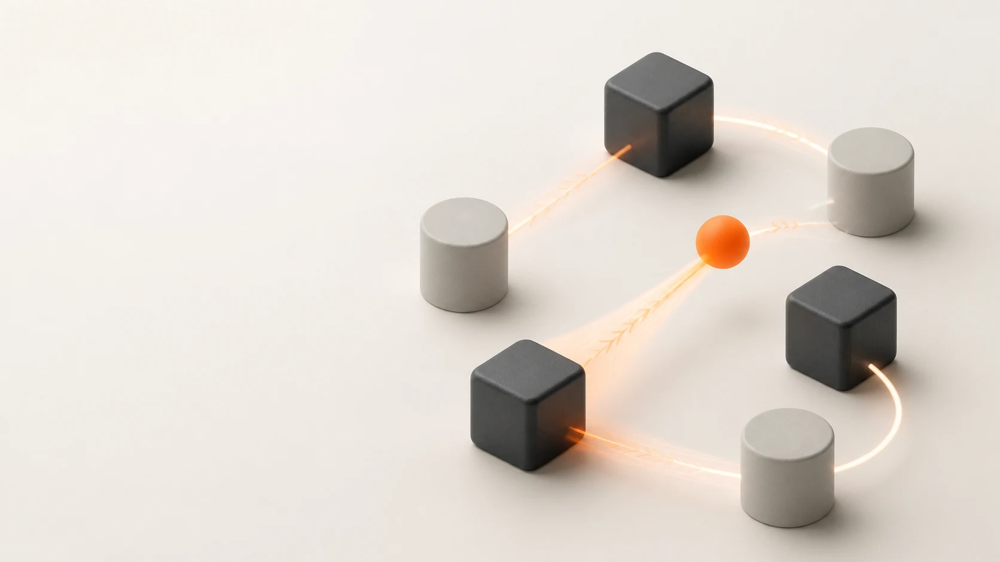

PRECISE / PREMIUM
Confirm a choice
Fast move, tight easing, tiny overshoot.
Confident, technical, controlled.
DAY 1 / MOTION GRAPHICS PRINCIPLES
Turn ideas into motion.
Turn motion into products.

STUDY 001 THE KINETIC RELAYDrag to rotateTrigger. Response. Reveal. Return.
Learn motion principles and bring your first movement to life in Blender.
Create the Kinetic Relay with clear timing, rhythm, and connected reactions.
Polish the loop, apply feedback, and develop your own animation.
Before we touch Blender, we learn to see what movement is doing: guiding attention, creating feeling, and making ideas readable.
Motion is a design decision.
A movement should have a job. It can point the eye, explain a relationship, prepare an action, or make a brand feel sharp, soft, playful, precise, or premium.
Ask: what is the motion doing?
Nothing has changed except the motion design decision: timing, spacing, anticipation, and settle.
Fast move, tight easing, tiny overshoot.
Confident, technical, controlled.
Anticipation, squash/stretch, delayed settle.
Friendly, curious, light.
Question: did the object change, or did the motion change the meaning?
Good motion creates order. It tells the viewer where to look first, what to follow next, and when the important moment has arrived.
First. Next. Payoff.
A clear path is not about adding arrows. It is about deciding what moves first, what waits, and what becomes important last.
Competing motion, similar contrast, no priority.
The viewer has to search.
One cue travels, objects respond in sequence.
The viewer knows what to follow.
Question: where does your eye go first, second, and third?
The same object can feel heavy, quick, elegant, funny, technical, or luxurious. Personality comes from timing, spacing, rhythm, materials, and the way actions settle.
Movement can feel like a brand.
Watch for rhythm, sharp transitions, contrast, and how motion creates a confident sport feeling before the logo matters.
With the sound low, follow the attention driver. What makes the movement feel athletic, even without the logo?
Watch for compression, expansion, material mood, and the moment where the visual system feels resolved.
Where is the anticipation? Where is the payoff?
Watch how visual metaphors connect scenes. The motion keeps the viewer oriented even when the graphics change.
What idea is being explained through movement?
Watch for trigger, reaction, transfer, resolution, and reset. The loop feels good because the return is motivated.
Can you find the exact moment the loop restarts?
Now we turn motion into craft: timing, spacing, easing, anticipation, overshoot, rhythm, and the final settle.
Good motion is built, not guessed.
Timing is how long a move takes. Spacing is the distance between successive frames. Together they shape rhythm.
Feels sharp, urgent, confident, or surprising.
Feels deliberate, heavy, elegant, or important.
Change duration. Dots mark equal time intervals; their gaps show spacing.
Ask: Should this action feel instant, deliberate, or earned?
The path can stay identical while acceleration and deceleration change the feeling.
Which movement changes speed?
Clear and technical, but often lifeless for character or product motion.
The move accelerates, slows down, and feels more physical.
Keep duration fixed. Change how the object gains and loses speed.
Ask: Should the movement feel mechanical, soft or decisive?
Acceleration, impact, bounce and settling tell the viewer how much mass an object has.
Which object feels heavier?
Fast impacts and high bounces reduce sense of weight.
Fall time, impact spacing and settling suggest weight.
Compare a restrained impact with a lively rebound.
Ask: Which timing decisions make one object feel heavier?
A small pullback or compression prepares the viewer for the main action.
The viewer reacts after the movement has already started.
A small pullback or compression tells the eye what is coming.
Prepare the main action with a small move in the opposite direction.
Ask: what tiny movement can prepare the big one?
Curved paths turn simple translation into a fluid gesture shaped by joints or forces.
A rigid straight line can make the action feel diagrammatic.
A controlled arc reveals swing, direction and physical intent.
Drag the handles sideways or up and down. Use arrow keys when focused.
Ask: What kind of force or pivot should shape the path?
Temporary deformation makes acceleration, flexibility and impact visible.
Which example makes deformation visible?
Rigid geometry hides compression and acceleration.
Opposing scale changes show impact while preserving volume.
Compress on impact and stretch in flight. The diagram preserves area.
Ask: Where should the object compress or elongate?
Different parts of a system respond and settle at different moments.
A simultaneous stop removes momentum and flexibility.
Delayed responses show what leads, follows and settles last.
Let the second part follow and settle after the leader.
Ask: What should continue moving after the main action ends?
The object passes its target, then returns. This is one way to exaggerate an action.
Useful for precise UI motion, but can feel stiff.
The object passes the target slightly, then resolves.
Pass the destination, then settle back onto it.
Ask: how much overshoot suits this movement?
A restrained supporting response can connect cause and effect without stealing focus.
Supporting reactions are as strong as the main event.
Smaller delayed reactions reinforce the primary action.
Keep the supporting reaction smaller than the main action.
Ask: Does the supporting motion strengthen or distract?
Clear silhouettes, deliberate spacing, and a strong focal point make a design inviting. Appeal can be playful, precise, or quiet.
Give one object priority through spacing, scale, and contrast.
Can you tell where to look before anything moves?
Change the motion. Compare it with the gray ball’s constant speed.
Slow at the start, fast in the middle, soft at the end.
Edit the curve to control how the orange ball speeds up and slows down.